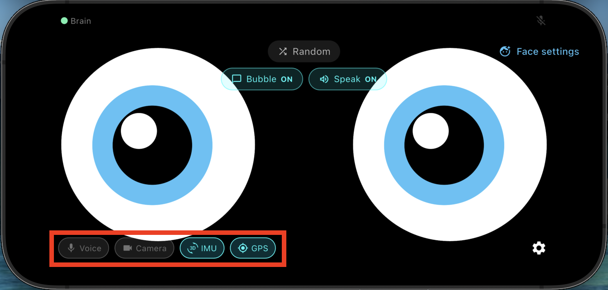
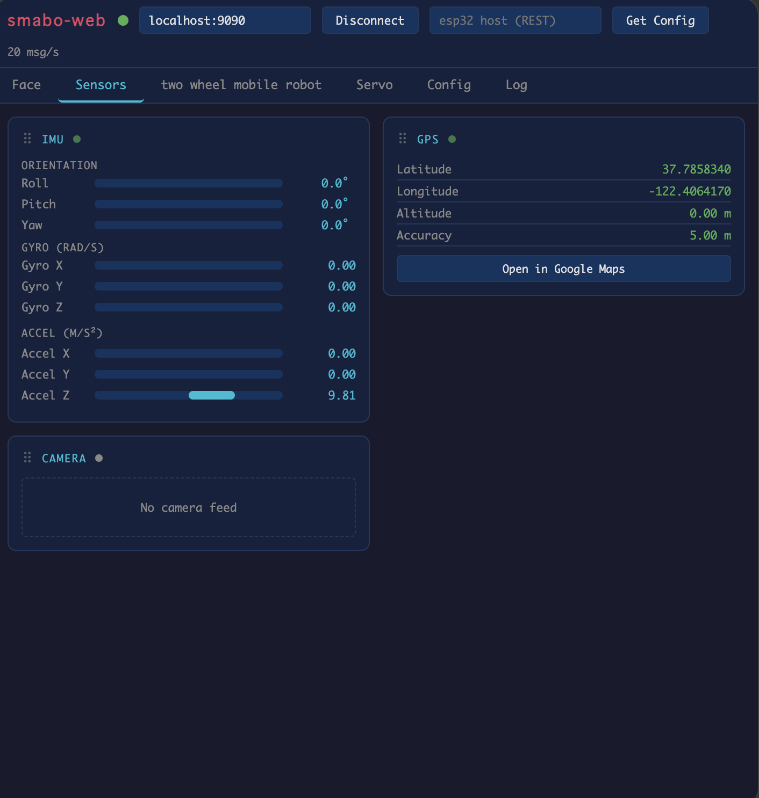

ロードマップ#
本ページは、以下ロードマップ「スマホのセンサー」のガイドページです。
また、本ページは「smabo-app」のガイドを実施している前提で話を進めます。
概要#
本ページでは「スマホのセンサー」機能の使い方について解説します。
具体的には、以下の内容を実施します。
- スマホから受け取ったセンサデータ（画像、IMU、GPS）をsmabo-webで可視化
必要パーツ#
本機能の実装に必要なパーツを以下に記載します。
| 部品名 | 商品URL | 備考 |
|---|---|---|
| スマートフォン | - | smabo-appをインストール済みのスマホ |
動作手順#
起動手順#
「こちらの起動手順」の内容を実行してください。
各種センサーの状態を可視化#
smaboの各種センサのON/OFFは左下のボタンで設定できます。

センサをONにした状態で、smabo-webで「Sensors」タブを確認すると、各種センサの情報を可視化できます。

次回#
次回は、以下ロードマップの
について解説します。